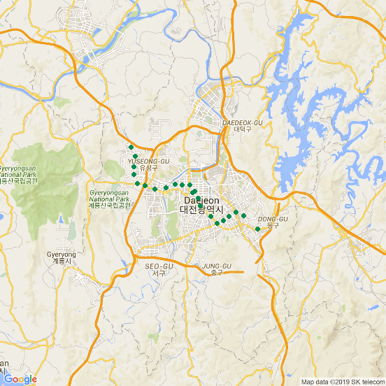

제7장 대전 지하철 노선도 (2) : 역이름으로만 노선도 그리기
- 대전의 geocode 확인하기
xxxxxxxxxxlibrary(ggmap)library(ggplot2)register_google(key="Google API Key") # 구글 API 인증geocode('Daejeon', source='google')# geocode(enc2utf8('대전'), source='google')결과 :
xxxxxxxxxx## Source : https://maps.googleapis.com/maps/api/geocode/json?address=Daejeon&key=xxx## # A tibble: 1 x 2## lon lat## <dbl> <dbl>## 1 127. 36.4
xxxxxxxxxx# 대전 주소 반환geocode(enc2utf8('대전'), source='google', output = 'latlona')결과 :
xxxxxxxxxx## Source : https://maps.googleapis.com/maps/api/geocode/json?address=%EB%8C%80%EC%A0%84&key=xxx## # A tibble: 1 x 3## lon lat address ## <dbl> <dbl> <chr> ## 1 127. 36.4 daejeon, south korea
xxxxxxxxxx# 한글 주소 반환geocode('Daejeon&language=ko', source='google', output = 'latlona')결과 :
xxxxxxxxxx## Source : https://maps.googleapis.com/maps/api/geocode/json?address=Daejeon&language=ko&key=xxx## # A tibble: 1 x 3## lon lat address## <dbl> <dbl> <chr>## 1 127. 36.4 대한민국 대전
xxxxxxxxxx# 다음은 geocode함수를 데이터프레임의 형태를 통해 일괄적으로 처리하는 mutate_geocode 함수에 대해 보려고 한다.# 대전역 1호선 역목록station_list = c('판암역', '대전대역', '대전 대동역', '대전역', '대전 중앙로역', '대전 중구청역', '서대전네거리역' '대전 오룡역', '대전 용문역', '대전 탄방역', '대전 시청역', '정부청사역', '갈마역', '월평역', '대전 갑천역', '유성온천역', '대전 구암역', '현충원(한밭대)역', '대전 월드컵경기장역', '대전 노은역', '대전 지족역', '반석역')# 역 목록을 데이터프레임으로 구성한 다음에 주소의 인코딩을 utf8로 변경station_df = data.frame(station_list, stringsAsFactors = FALSE)station_df$station_list = enc2utf8(station_df$station_list)# ggmap 패키지의 mutate_geocode 함수를 이용해서 위도/경도값을 받아온다. ==> 어찌된 일인지 한번에 다 가져오지 못함.# mutate_geocode(데이터프레임, 열이름, 소스(여기서는 구글))의 형태로 지정한다(station_latlon = mutate_geocode(station_df, station_list, source = 'google'))head(station_latlon)결과 :
xxxxxxxxxx## station_list lon lat## 1 판암역 127.4583 36.31690## 2 대전대역 127.3845 36.35041## 3 대전 대동역 127.4430 36.32945## 4 대전역 127.4342 36.33233## 5 대전 중앙로역 127.4258 36.32867## 6 대전 중구청역 127.4196 36.32
xxxxxxxxxx# gmap 패키지의 qmap함수를 이용해 지도를 생성하고 ggplot2 그래프를 그릴 수 있다daejeon_map <- qmap(enc2utf8('대전'), maptype="roadmap", zoom = 11)daejeon_map + geom_point(data = station_latlon, aes(lon, lat), size = 2, colour='#018b4d')결과 :

[ R Source ]